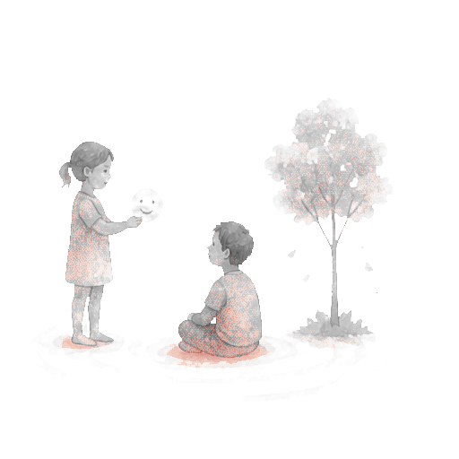
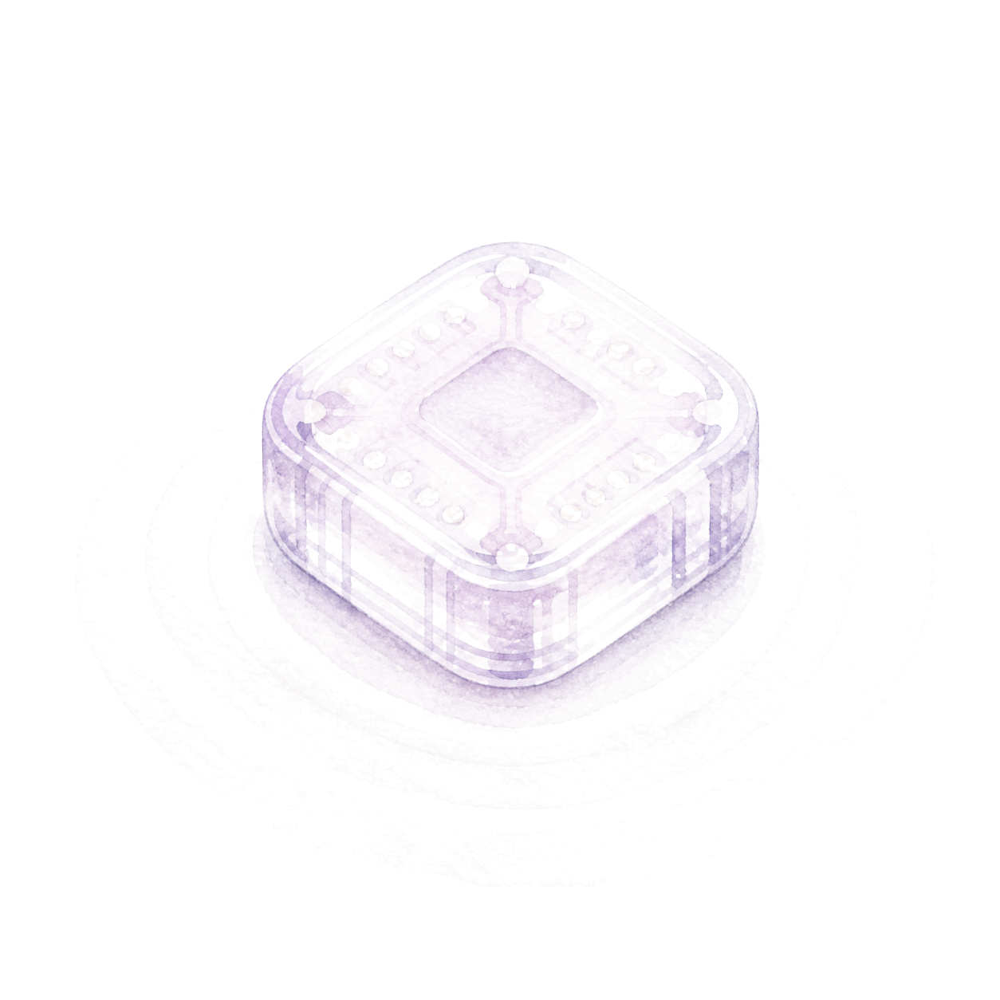
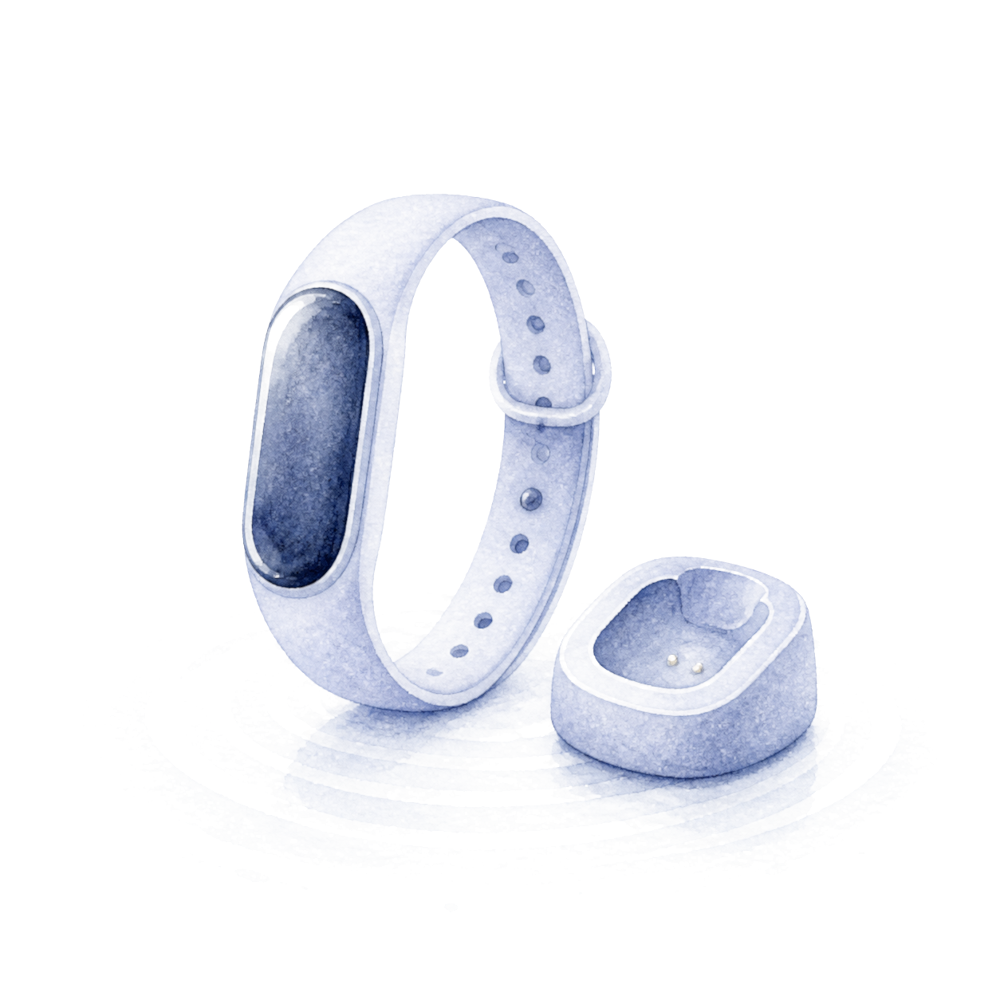
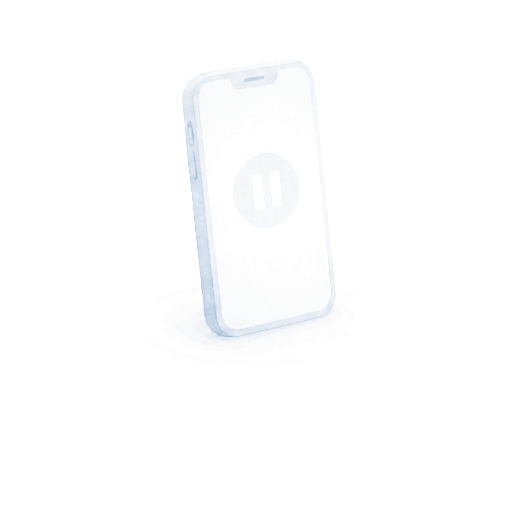
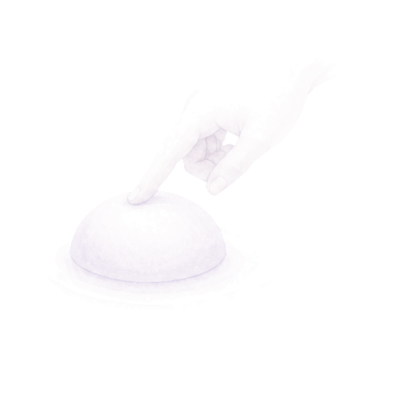
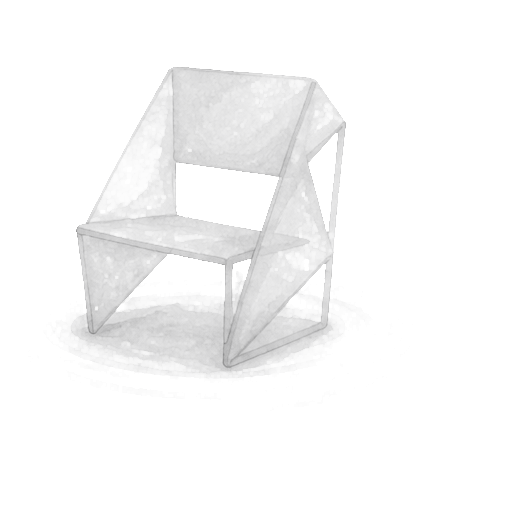

MAKING
EMOTIONS
LEGIBLE
EMOTIONS
LEGIBLE
AFFECTIVE INTERFACES FOR AMBIGUOUS STATES
I design affective interfaces
that make ambiguous emotional
and psychological states
perceptible, interpretable,
and actionable.
Many emotional and psychological states are felt before they can be clearly recognized or explained. My work explores how design can mediate these ambiguous states through narrative, information, touch, and physical interaction. Rather than attempting to diagnose or resolve emotion, I design interfaces that help people notice what they are experiencing, make sense of it, and find ways to respond.
A M B I G U O U S
E X P E R I E N C EFelt before it is known.
—
E X P E R I E N C EFelt before it is known.
—
SCREENING GAMEFELT → ARTICULATED


PRODUCT-SERVICEFELT → INTERPRETED



